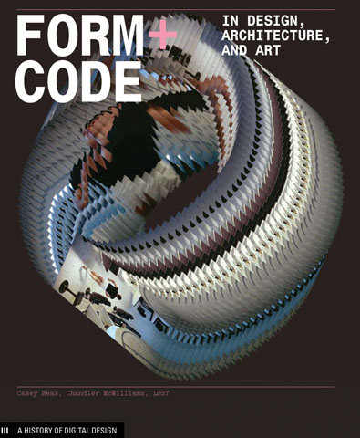

Type+Media
A Typography Course Based On
Computer Programming
Explore what Korean typography could be in the digital age, where screen, online communication, animation and interaction are considered common-sense.
For graphic design students who have traditional design skills but have never coded before.
Two Courses
Type+Media, 2015
DesignTech Workshop, 2016
Type+Media Instuctors
Dae In Chung
Maryland Institute College of Art
Jiwon Lee
Kookmin University, South Korea
DesignTech Instuctors
Jiwon Lee
Kookmin University, South Korea
Daegwon Kim
Software Engineer, Smartstudy
What I will present today
Hangul
Computational Typography
Courses
Student Work
Final Thoughts
Hangul
Korean written language
Hangul was invented
by King Sejong in 1443.
Consonants
Five Basic Consonants

Syllable
Modular Design
Maluma and Takete

Chul Hee Park / 박철희

Jae Joon Han / 한재준
Computational Typography
Mapping data to letterform
distance
temperature
nuance
emotion
Form+Code
by Casey Reas and Chandler McWilliams
Repeat
Transform
Parameterize
Visualize
Simulate
iOS 10 Messages
Courses
Process, Result and Reflection
Audience
- Type+Media: Jr. graphic design majors as part of the regular curriculum.
- DesignTech Workshop: working professionals and students from various backgrounds.
Objectives
Tools
- Processing already has large user base and learning resources
- p5.js is very similar to Processing. It works on the web.
Course Topics
- Conditional Design
- Variables
- Functions
- Individual Projects
Conditional Design
Conditional Design
Student Work
Yu Jin Kim / 김유진
Cheol Jun Lim / 임철준
Se Yeon Park / 박세연
Hyolim Sohn / 손효림
SunAh Hwang / 황선아
Saebom Lee / 이새봄
Shinjae Jung / 정신재